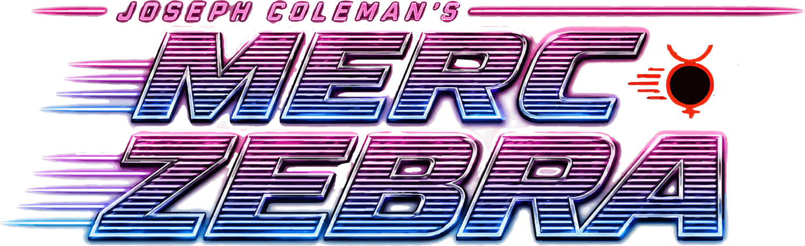

JOSEPH COLEMAN'S
MERC ZEBRA
101Ventura
LEFT 3 LANES

ROB'S TRATTORIA
MORALE CORP
VALLEY SMOKER
TAYLOR'S AUTO PARTS
25¢ PER PLAY
ANDERS APPROVED
ANDERS & PARTNERS LLC · RESPEK LOGIC ART UREA
← → TURN · ↑ GAS · ↓ BRAKE · SPACE RIDE · SHIFT LAY LOW · H HORN